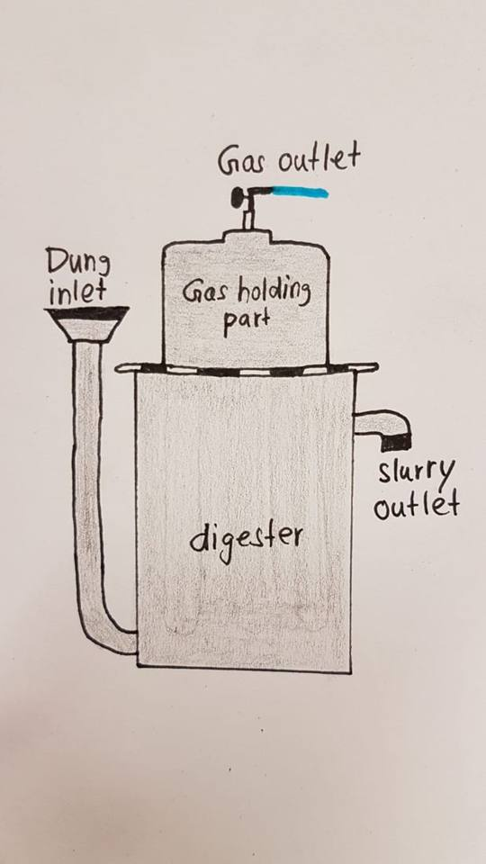
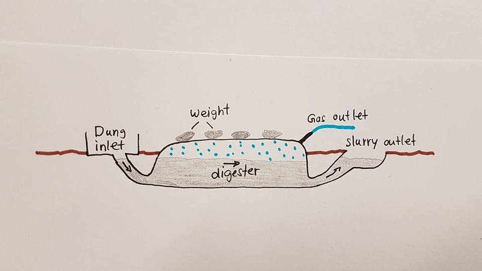
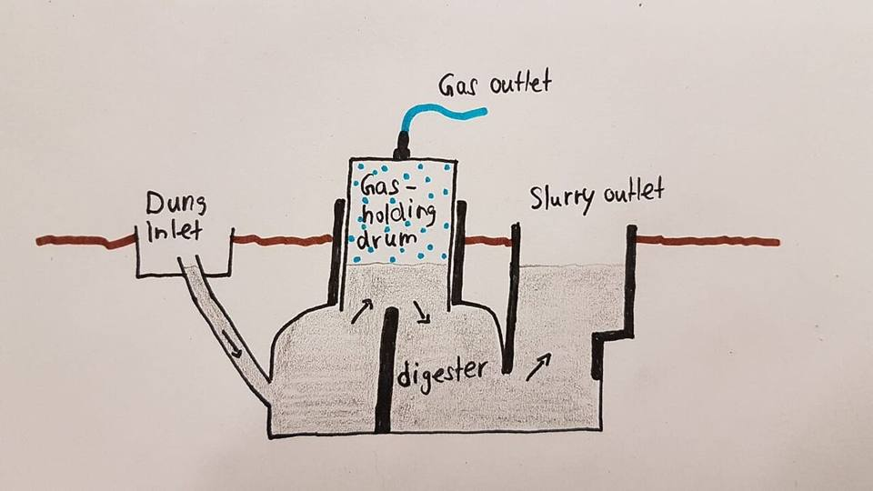
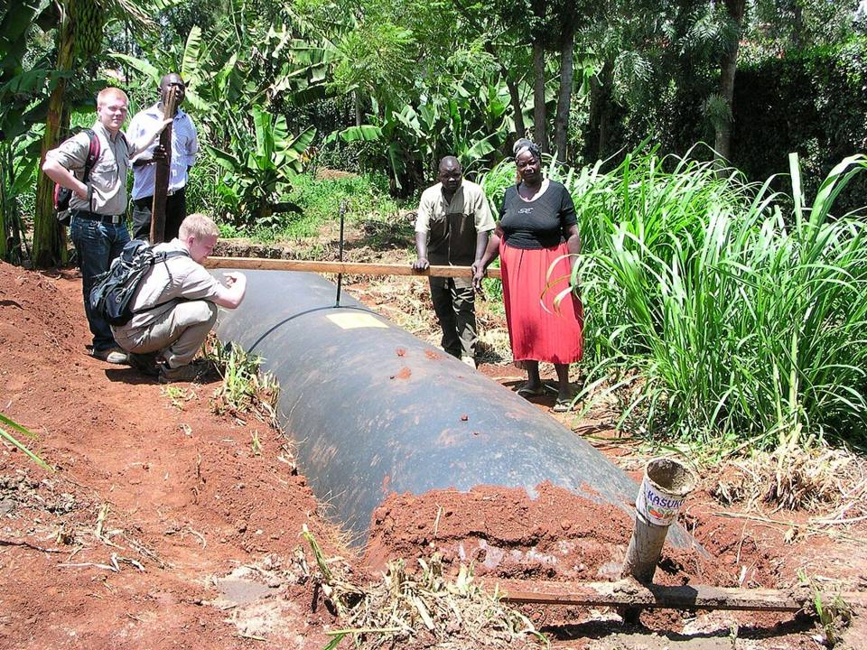
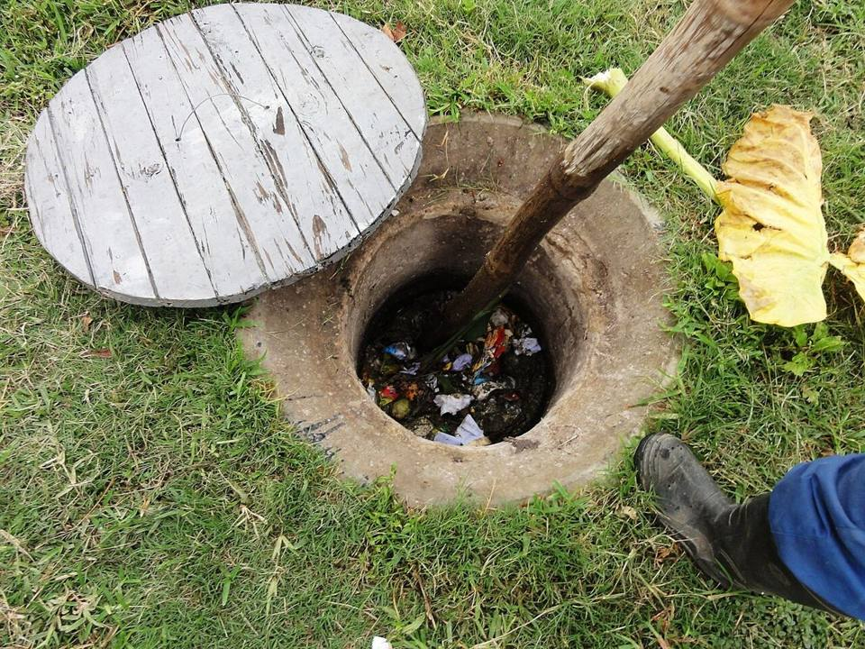

Choose your digester
Every digester does the same job: it is an airtight vessel in which bacteria break down manure and release gas [S11]. The designs differ in gas pressure, the skill needed to build them, and how long they last [S3].
| Type | Gas pressure | Builder skill | Lifespan | Size | Best for |
|---|---|---|---|---|---|
| Rigid plastic tank | Low, about 2 mbar | Low: plumbing | Medium | Up to 6 m³ | A self-build from a water tank or IBC container |
| Flexible bag or tube | Low, about 2 mbar | Medium: plumbing | Medium; depends on the liner | Units can be combined | Warm sites; cheap and prefabricated, but needs shade and a fence |
| Fixed dome (masonry) | 60–120 mbar | High: masonry and plumbing | Very high, over 20 years | 6–124 m³ | Permanent farms with a trained mason |
| Floating drum | Up to 20 mbar | High: masonry, plumbing, welding | High; the drum is the weak point | Up to 20 m³ | Where steel work and upkeep are available |
| Prefabricated kit | Low | Low: follow the maker's guide | Depends on the product | Household sizes | The fastest start; HomeBiogas lists systems from US$975 |






For households in Yemen, our study scored the flexible bag and the rigid tank highest, and suggests a fixed dome only where a skilled mason is available [S1].
Plays from YouTube (youtube-nocookie.com) only after you press play. Watch on YouTube
Step 1 Check you have enough manure and water
- Our design feeds 25 kg of fresh cattle manure and 25 litres of water every day. At about 40 litres of gas per kg, that makes about 1 m³ of biogas a day [S1].
- The IEA reports that household digesters typically make about 1 m³ a day, enough for two to three hours of cooking from 20–30 kg of manure [S12].
- Cooking uses 150–300 litres of biogas per person per meal [S5]. Multiply by the number of people you cook for.
- Water matters as much as manure: this design needs about 9 m³ of water a year [S1].

.jpg){kind=link}
Step 2 Choose the site
- Build close to the kitchen to keep the gas pipe short [S2], and close to the animal pen so daily feeding is easy.
- Pick a warm, sunny spot. An unheated digester runs only 1–2 °C warmer than the soil around it [S5], and gas production is limited below 15 °C [S2].
- A flexible bag needs a place where its skin cannot be damaged: shade it and fence it off [S4].
- Keep the digester and its slurry away from drinking-water wells and ground that floods.

.jpg){kind=link}
Step 3 Work out the size
Working volume = daily slurry × retention time [S5].
- Retention time should be at least 15 days in hot climates and 25 days in temperate ones [S2]. Our Yemen design uses 40–60 days [S1].
- Worked example: 50 kg of slurry a day (0.05 m³) × 40–60 days = 2–3 m³ of working volume [S1].
- Leave space above the slurry, and plan storage for 40–60% of a day's gas, because you cook at set times [S5].
Step 4 Build or install the digester
Choose one of three routes. The rigid tank and the flexible bag suit a self-build; the fixed dome needs a trained mason.
Route A: rigid tank
Use a strong, sealed plastic tank, such as a water tank or an IBC container. Fit an inlet pipe, an outlet for digestate and a gas outlet at the top, as in the tank diagram above. Shade or insulate the tank so it keeps its temperature [S5].
Plays from YouTube (youtube-nocookie.com) only after you press play. Watch on YouTube
Route B: flexible bag or tube
A heat-sealed plastic bag works as both digester and gas holder, with the inlet and outlet fixed to the bag [S4]. It is cheap and prefabricated, but it has a shorter life and is easily damaged, so place it where the skin is safe, shade it and fence it [S4].

.jpg){kind=link}
Plays from YouTube (youtube-nocookie.com) only after you press play. Watch on YouTube
Route C: fixed dome (trained mason only)
An underground masonry digester with a fixed gas dome. As gas builds up it pushes slurry into an expansion chamber, which creates the pressure that sends gas to the kitchen [S2, S3]. It can last 20 years or more, but the dome must be gas-tight, which needs special sealants and high skill; leaks are common when it is built badly [S3].

.jpg){kind=link}
Plays from YouTube (youtube-nocookie.com) only after you press play. Watch on YouTube
Step 5 Set up the inlet, outlet and mixing
- Mix manure 1:1 with water in the inlet tank until it flows [S1].
- Chop other organic waste and mix it with water or digestate before feeding it [S2].
- Let sand and grit settle out first; grit that reaches the digester has to be removed later [S2].
- Lead the outlet to a covered storage pit or a channel to the field.

.jpg){kind=link}
Step 6 Fit the gas line, filter and storage
- Use galvanised steel or PVC pipe. Bury PVC: sunlight and children playing damage it [S6].
- Slope the pipe at least 1% so water drains back to the digester. At any low point, fit a water trap and empty it regularly [S6].
- Put valves where you can reach them [S6].
- Biogas contains 0.01–0.4% hydrogen sulphide (H₂S), which is toxic and corrodes metal [S7]. Pass the gas through a filter, such as iron oxide or steel wool, before the stove (see the video).
- Store 40–60% of a day's gas in a bag or gas holder [S5].

.jpg){kind=link}
Plays from YouTube (youtube-nocookie.com) only after you press play. Watch on YouTube
Step 7 Test for leaks and start up
- Before you close the trenches, pump air into the closed pipe to 2.5 times the plant's highest gas pressure. If it loses pressure within a few hours, brush soapy water on every joint: bubbles show the leak [S6].
- Fill the digester and seed it with bacteria, for example with fresh cow dung [S2].
- The first gas is mixed with the air that was inside, and biogas mixed with air can explode [S7]. Release the first gas outdoors, away from any flame, before you light the stove.
- Gas output rises as the bacteria multiply. In cool weather this is slower, because production is limited below 15 °C [S2].

.jpg){kind=link}
Step 8 Feed it and check it every day
- Feed the same amount every day; digesters work best with regular feeding [S2].
- Write down the kilograms of manure, litres of water, slurry temperature and the gas you use. Our study's pilot plan asks for exactly these records [S1].
- If gas bubbles out of the inlet but little reaches the stove, a thick layer of scum has probably formed [S7].
- Clean the gas equipment regularly to prevent corrosion and leaks, remove settled grit, and expect to empty the digester every 5–10 years [S2].
Step 9 Cook with the gas and use the digestate
- A household burner uses about 0.35 m³ an hour, so 1 m³ gives nearly three hours of cooking [S1].
- Use a stove made or adjusted for biogas, and set the air supply for a stable flame [S8].
- Digestate is only partly sanitised and can still carry disease [S2]. Store it covered and handle it with care before using it on fields.

.jpg){kind=link}

.jpg){kind=link}
Step 10 Fix common problems
| Problem | Likely cause | What to do |
|---|---|---|
| No gas after start-up | Too cold, or not seeded | Seed with fresh cow dung [S2]; keep the digester warm [S5] |
| Gas escapes at the inlet; low pressure at the stove | A thick scum layer [S7] | Break up the scum; feed regularly [S2] |
| Pressure drops overnight | A leak in the pipe or joints | Test every joint with soapy water [S6] |
| Flame flickers; water in the pipe | Condensed water at a low point | Empty the water trap and check the 1% slope [S6] |
| Bad smell; black marks on metal | Hydrogen sulphide [S7] | Renew the filter material |
| Much less gas in winter | Low temperature | Expected below 15 °C [S2]; insulate, for example with corn stalks or compost layers [S10] |
| Plastic or sand inside | Rubbish in the feed | Keep plastic out; remove grit [S2] |

.jpg){kind=link}
Safety
- Biogas mixed with air can form an explosive mixture, and fires can start even outside the explosive range [S7].
- Never enter a digester or a closed gas-storage space. Gas from manure has caused fatal accidents in animal husbandry [S7].
- Ventilate any enclosed space where gas could collect, and use gas alarms and breathing protection there [S7].
- No flames, smoking or sparks near the digester, the inlet, the outlet or the gas bag [S7].
- Keep children away: fence bags and inlets, and bury plastic pipe [S4, S6].
- Have a qualified technician check the gas storage, pipe, ventilation and pressure protection before you cook with it [S1].
Plays from YouTube (youtube-nocookie.com) only after you press play. Watch on YouTube
Newer methods and breakthroughs
- Prefabricated household kits. Plug-and-play systems such as HomeBiogas, from US$975 [S13], and Sistema.bio tubular biodigesters [S14] arrive ready to assemble.
- Prefabricated fibreglass domes. Some makers now build fixed-dome plants in fibreglass; a custom unit can be produced in 2 days and installed after transport [S3].
- Insulation for cold seasons. A 2012–2013 trial in Yunnan, China tested corn-stalk and compost layers to insulate 10 m³ fixed-dome digesters [S10].
- Biogas backpacks. Gas-tight bags are filled from a central digester by pressure equalisation, so neighbours can carry gas home [S9].
- Digesters for small farms. Rothamsted Research's Economad project is developing anaerobic digestion designed for small and medium farms [S15].


Plays from YouTube (youtube-nocookie.com) only after you press play. Watch on YouTube
Plays from YouTube (youtube-nocookie.com) only after you press play. Watch on YouTube
Sources
All sources were opened and checked on 28 November 2026.
| ID | Source | Used for |
|---|---|---|
| S1 | BioGas Inc., household biogas feasibility study for Yemen (2026) | Daily feed, gas yield, retention time, working volume, burner use, pilot records |
| S2 | SSWM / Tilley et al. (2014), Biogas Reactor factsheet | Retention time, siting near use, seeding with cow dung, low gas below 15 °C, maintenance, digestate hygiene |
| S3 | energypedia, Fixed-dome Biogas Plants | Comparison of digester types; fixed-dome design; prefabricated fibreglass domes |
| S4 | energypedia, Balloon Digester for Biogas Plants | Flexible bag digesters: design, lifespan, damage risk |
| S5 | energypedia, Sizing of the Biogas Plant | Digester volume, digester temperature, gas storage share, cooking gas use |
| S6 | energypedia, Biogas Gas Pipe, Valves and Accessories | Pipe materials, slope, water traps, leak testing |
| S7 | energypedia, Operation of a Biogas Plant | Gas composition, explosion and gas hazards, scum |
| S8 | energypedia, Biogas Appliances | Stoves and burners for biogas |
| S9 | energypedia, Biogas Backpack | Portable gas bags filled from a central digester |
| S10 | Initiative Développement (2013), Insulation of Fixed-Dome Biogas Digesters in China | Insulating digesters with corn stalks and compost layers |
| S11 | US EPA AgSTAR, How does anaerobic digestion work? | Process, biogas and digestate basics |
| S12 | IEA, Outlook for biogas and biomethane (citing SNV 2019) | Household output of about 1 m³ a day |
| S13 | HomeBiogas, household systems | Prefabricated kit; price from US$975 |
| S14 | Sistema.bio, biodigesters | Prefabricated tubular biodigesters |
| S15 | Rothamsted Research, Economad (video) | Anaerobic digestion designed for small and medium farms |
Photo credits
- Bio-gas in Tanzania (9297).jpg: Russell Watkins/Department for International Development, CC BY 2.0
- Digging the hole for the digester (4834074716).jpg: SuSanA Secretariat, CC BY 2.0
- Plastic tank digester.jpg: BiogasME, CC BY-SA 4.0
- Plastic tube digester.jpg: BiogasME, CC BY-SA 4.0
- Floating drum digester.jpg: BiogasME, CC BY-SA 4.0
- Bag digester - 2 (4644386374).jpg: SuSanA Secretariat, CC BY 2.0
- Digester dome construction (4833631219).jpg: SuSanA Secretariat, CC BY 2.0
- Mixing at the inlet (6593867591).jpg: SuSanA Secretariat, CC BY 2.0
- Biogas set up in detail (5363273033).jpg: SuSanA Secretariat, CC BY 2.0
- Naivasha Biogas kitchen (4427168730).jpg: SuSanA Secretariat, CC BY 2.0
- Cooking with biogas stove (14004617377).jpg: SuSanA Secretariat, CC BY 2.0
- Biomass slurry outlet to lead it directly to the fields (6955946985).jpg: SuSanA Secretariat, CC BY 2.0
- Naivasha maintainance of biogas plant (4426405729).jpg: SuSanA Secretariat, CC BY 2.0
- Portable Biogas plant.jpg: Kevinsooryan, CC BY-SA 4.0